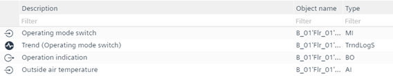
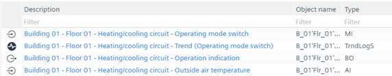
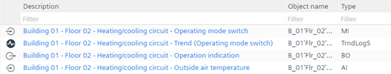
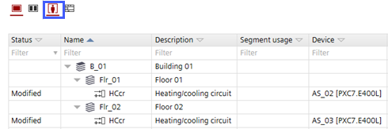
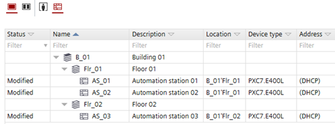
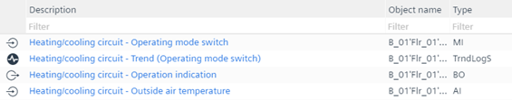
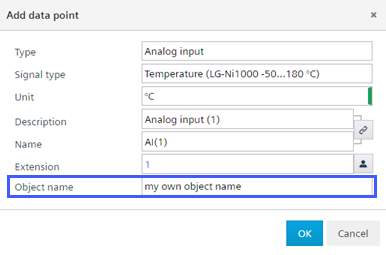
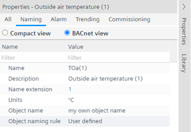

工厂自动化选项卡
部分 | 环境 | 描述 |
|---|---|---|
默认值 |
| 房间位置面积 添加文件夹和数据点时，选中该复选框还可以在文本选择器中显示旧系统的名称、描述和标签。这可能有助于与旧的 Desigo 项目兼容。 |
自定义状态文本的数量 | Defines the number of custom state texts that can be stored.
输入 0 到 100 之间的整数值以定义自定义状态文本的数量。 | |
分层描述 |
| 显示 ABT 站点中的标准行为。  |
Including building structure, plant & folders | 定义建筑结构、工厂和文件夹的分层描述。 1楼说明：  2楼说明：  Note：工厂必须分配到所需的建筑物。 构建层次结构视图：  设备视图：  | |
仅包括植物和文件夹 | Defines the hierarchical description with plant and folders.  | |
位置'大楼'楼层'翼'房间'段 | 定义分层描述中的分隔符。默认为“-”。 | |
对象命名 |
|
 在Properties选项卡，Object name rule字段更改为User defined.  Note：不建议将此函数与用户指定一起使用，因为这两个函数使用相同的数据源。这可能会妨碍数据点描述的一致视图。 |
|
| |
I/O 替换的命名设置 | Use I/O name of | 定义替换名称时将使用哪些文本：
Replacing names and descriptions Note：如果您更改标准名称，例如将 TSu 更改为 myTSu，则 Desigo CC（图形生成器、图形符号、报告等）和 Desigo Control Point 中的自动功能将不再起作用，相应的图形也必须进行调整。 |
使用 I/O 描述 | 定义替换描述时将使用哪些文本：
|
 显示所有名称和标签
显示所有名称和标签 激活的复选框会显示一个附加的Object name创建新对象时的字段。在字段中输入对象名称文本。将对象名称保留为空将产生标准的分层对象名称。Note：在项目内，文本必须是唯一的。
激活的复选框会显示一个附加的Object name创建新对象时的字段。在字段中输入对象名称文本。将对象名称保留为空将产生标准的分层对象名称。Note：在项目内，文本必须是唯一的。